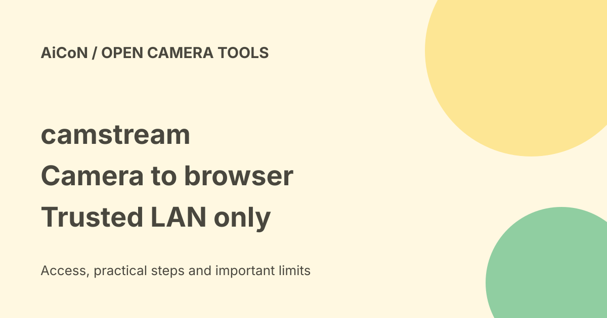

camstream: Linux camera to browser, with local-network limits
camstream sends a Linux or Raspberry Pi camera feed to a browser using WebRTC. It is a developer project, not an install-and-forget security-camera app. Start with a test pattern on an isolated, trusted local network.

What camstream does
The checked project describes a C11 server that captures a V4L2 camera, encodes H.264 and sends video over real WebRTC. V4L2 is Linux's video-device interface. WebRTC is the browser technology used for live audio and video. The native route uses HTTP for the page and connection setup, then UDP for media. It does not need a cloud account, separate signalling server, STUN or TURN for its documented direct local-network setup.
Those last two services help connect devices across more difficult networks. Their absence here means you must not assume this is an internet-ready remote-viewing product. The README also describes optional libpeer and Janus transport builds. Use the native path first rather than mixing the instructions.
Hardware, software and costs
You need Linux, a compatible camera for real capture, a browser on the viewing device and a trusted network. The test-pattern mode does not need a camera. Build requirements include a C toolchain, OpenSSL and libsrtp2; the software H.264 encoder uses libx264. Camera formats and encoder availability matter. The project has Raspberry Pi guidance, but that is not a promise that every Pi, USB camera or browser will work.
No service subscription is described for the native LAN route. A Pi, camera, storage, power and your own setup time still cost money. More importantly, a public repository is not automatically freely licensed software. Our check did not find a top-level LICENSE file. Do not assume a right to redistribute, modify commercially or bundle it until the maintainer clarifies the licence.
Safer first test
- Read the current README and dependency list. Do not install a random prebuilt binary or follow a copied command without checking it.
- Use a spare Linux machine or Pi on an isolated trusted LAN. Avoid a device holding work secrets.
- Build the project after inspecting its source and dependencies.
- Start its documented test pattern with the software encoder. Check the printed address from your browser before connecting a real camera.
- For another device, use the server's LAN address, not localhost. Check the firewall only for this trusted network.
- Try a camera you own, keep people informed, and stop the server when finished.
The documented default HTTP port is 8080. The native media range starts at UDP 50000; the README gives 50000-50007 for up to eight viewers. Opening ports on a LAN firewall is not the same as forwarding them on your internet router. Do not create public port forwarding for this experiment.
Viewer access and privacy
WebRTC transport security does not provide a person-level viewer login. We did not verify a built-in account/password system in the documented viewer page. Anyone who can reach an unprotected local endpoint may be able to request a stream. Restrict network access, avoid public Wi-Fi, and do not use this for a sensitive room or unattended surveillance.
A browser connection can fail even when the page loads: video uses UDP, and HTTP proxies do not carry that media path. The README has separate troubleshooting for camera capture, encoding, connection setup and media. Do not respond to failure by disabling every firewall or exposing the machine publicly.
India and practical limits
This is source code, not a country-specific consumer service. We saw no India account requirement. Hardware compatibility, network design and your own security review decide whether it fits. No installation, camera test, latency benchmark or independent security audit was performed for this guide. The README's performance figures are project claims, not AiCoN measurements.
Frequently asked questions
Can it work without internet?
The documented Pi-to-laptop native LAN path can, once software and dependencies are ready. Initial downloads need connectivity.
Is the camera feed public?
Not inherently, but your network exposure decides who can reach it. Keep it on a restricted LAN.
Is it open source?
The code is public. The missing checked top-level licence means we will not promise open-source reuse rights.
What changed since the earlier post?
The archive's cautious verdict remains: promising for developers, not a general-use recommendation. The current README labels the implementation 2.0.0 and describes native, libpeer and Janus routes. A README version is not proof of a packaged tagged release. Missing licence clarity and unverified viewer login remain reasons to pause wider use.
Sources: Project and README. Checked 8 October 2026.